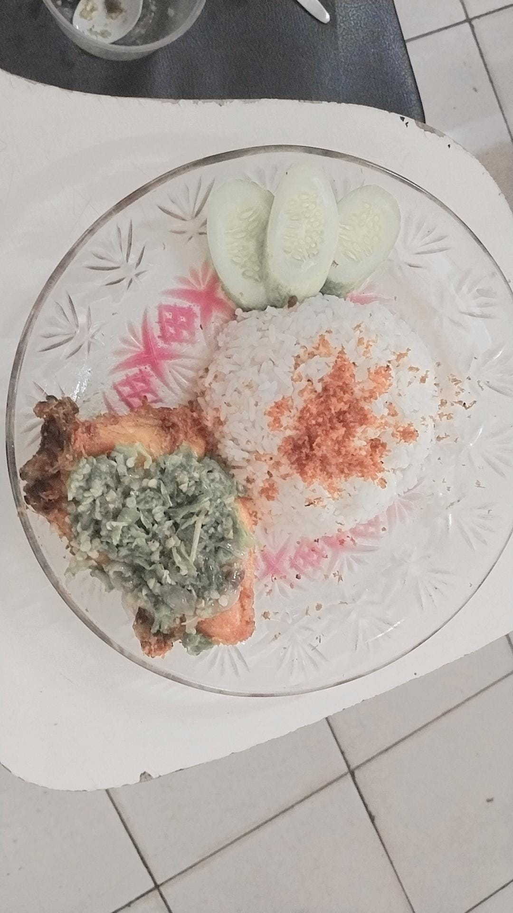
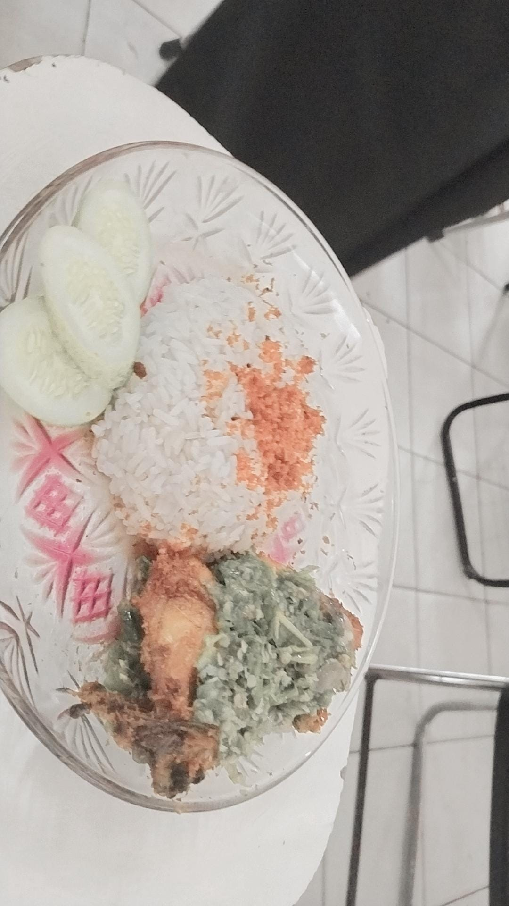

SAMBAL IJO


hai kami dari kelompok 5 akan mempromosikan sambal ijo, sambal ijo ini memiliki rasa yang lumayan
sambal ijo ini enak di makan ketika ada nasi dan lauk, sambal ijo ini tidak bisa di gado-gado
kalo di gado rasanya akan begitu buruk/tidak enak